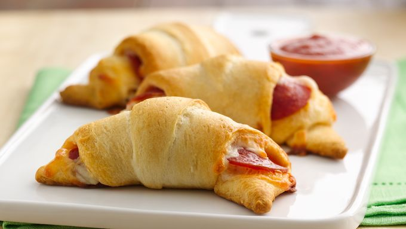

Faux Pizza Rolls

Description
Pizza Rolls that are quick, dirty, and more importantly, require no culinary skills. Pillsbury approved.
Ingredients
- Pillsbury flaky cresent rolls. Get the big tube. Or offbrand, I'm not your dad.
- Any cheese you prefer. I recommend pepperjack and mozzeralla.
- Pepperoni
- Optionally, marinara sauce
Steps
- Break open your crescent roll tube and seperate pieces
- These rolls will be filled, so stretch them out into larger triangles
- Put your toppings on the bottom of the side you'd roll if these were normal crescent rolls. I recommend Cheese-Pep-Cheese-Pep
- Roll it up like a normal crescent roll, being careful not to split the crust
- Tuck corners into edges. Avoid having any openings in your cholesteral lump, you don't want melted cheese all over your pan/oven
- Remember you need to preheat the oven. Curse yourself for not doing it before step 1. We're going to use whatever heat is on the tube
- Grease your pan, put your pizza rolls on pan. Stick in oven for time recommended on tube. Even though they're larger, the default time is fine
- Enjoy!
Home